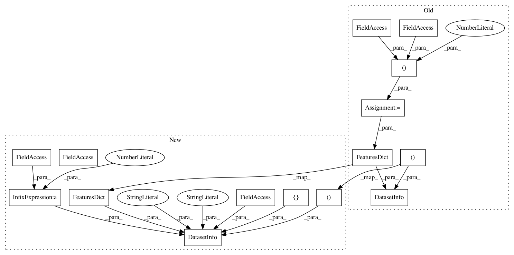

f7fd8a8395cbb90973dbd3ab7b55cda80865b656,tensorflow_datasets/image/cifar.py,Cifar100,_info,#Cifar100#,173
Before Change
)
def _info(self):
cifar_shape = (_CIFAR_IMAGE_SIZE, _CIFAR_IMAGE_SIZE, 3)
label_to_use = "coarse_labels" if self._use_coarse_labels else "fine_labels"
return tfds.core.DatasetInfo(
features=tfds.features.FeaturesDict({
"image": tfds.features.Image(shape=cifar_shape),
"label": tfds.features.OneOf(choice=label_to_use, feature_dict={
"coarse_labels": tfds.features.ClassLabel(num_classes=20),
"fine_labels": tfds.features.ClassLabel(num_classes=100),
}),
}),
supervised_keys=("image", "label"),
)
class CifarInfo(collections.namedtuple("_CifarInfo", [
"name",
After Change
def _info(self):
label_to_use = "coarse_labels" if self._use_coarse_labels else "fine_labels"
return tfds.core.DatasetInfo(
name=self.name,
description=("This dataset is just like the CIFAR-10, except it has "
"100 classes containing 600 images each. There are 500 "
"training images and 100 testing images per class. The "
"100 classes in the CIFAR-100 are grouped into 20 "
"superclasses. Each image comes with a \"fine\" label "
"(the class to which it belongs) and a \"coarse\" label "
"(the superclass to which it belongs)."),
features=tfds.features.FeaturesDict({
"image": tfds.features.Image(shape=_CIFAR_IMAGE_SHAPE),
"label": tfds.features.OneOf(choice=label_to_use, feature_dict={
"coarse_labels": tfds.features.ClassLabel(num_classes=20),
"fine_labels": tfds.features.ClassLabel(num_classes=100),
}),
}),
supervised_keys=("image", "label"),
urls=["https://www.cs.toronto.edu/~kriz/cifar.html"],
size_in_bytes=161.2 * tfds.core.units.MiB,
citation=("Learning Multiple Layers of Features from Tiny Images, "
"Alex Krizhevsky, 2009. "
"https://www.cs.toronto.edu/~kriz/"
"learning-features-2009-TR.pdf")
)
class CifarInfo(collections.namedtuple("_CifarInfo", [
"name",
In pattern: SUPERPATTERN
Frequency: 3
Non-data size: 15
Instances
Project Name: tensorflow/datasets
Commit Name: f7fd8a8395cbb90973dbd3ab7b55cda80865b656
Time: 2018-11-16
Author: afrozm@google.com
File Name: tensorflow_datasets/image/cifar.py
Class Name: Cifar100
Method Name: _info
Project Name: tensorflow/datasets
Commit Name: f7fd8a8395cbb90973dbd3ab7b55cda80865b656
Time: 2018-11-16
Author: afrozm@google.com
File Name: tensorflow_datasets/image/cifar.py
Class Name: Cifar10
Method Name: _info
Project Name: tensorflow/datasets
Commit Name: f7fd8a8395cbb90973dbd3ab7b55cda80865b656
Time: 2018-11-16
Author: afrozm@google.com
File Name: tensorflow_datasets/image/mnist.py
Class Name: MNIST
Method Name: _info